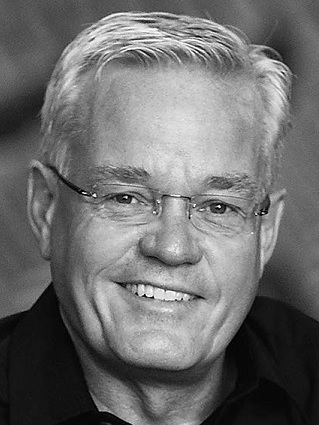

<section class="single-bg second-page-top color-scheme-2">
  <div class="section-block-title">
        <div class="section-title left">
            <div class="container-fluid ">
                <div class="row">
                   <div class="col-lg-offset-2 col-md-offset-0 col-sm-0 col-xs-0 ">
                      <div class="pull-left"  id="resizeSpeakerImg" >
                       
                     </div>
                      <div class="pull-left" id="resizeArrowImg">
                       
                     </div>
                    </div>

                    <div class="col-lg-5 col-md-10  col-sm-12 col-xs-12">
                       <article class="section-title-body white">
                            <div class="head-title mb-30">BILL HYBELS
                              <p class="speakerText">Fundador y Pastor Principal, Willow Creek Community Church</p>
                            </div>
                            <p class="speakerText mb-30">
                            Bill Hybels es el pastor principal de Willow Creek Community Church, una iglesia de más de 25,000 personas que celebró su 40 aniversario en el 2015. Él fundó La Cumbre Global de Liderazgo con el compromiso de desarrollar y asesorar a líderes en todo el mundo. Actualmente, la Cumbre impacta a líderes en 125 países. Hybels es el autor exitoso de más de  20 libros y su nuevo curso de liderazgo en video titulado Liderando Desde Aquí Hasta Allá: 5 Destrezas Esenciales que saldrá en septiembre del 2016
                            </p>

                          <div class="block-blog">
                            <p class="post-information">
                                <!-- <a href="#" class="smlinks"><i class="ion-social-facebook"></i> facebook</a> -->
                                <a href="https://twitter.com/BillHybels" target="_blank" class="smlinks"><i class="ion-social-twitter"></i> twitter</a>
                               <!--  <a href="#" class="smlinks"><i class="ion-social-linkedin"></i> linkedin</a> -->
                            </p>
                         </div>
                      </article>
                    </div>
                </div>
            </div>
        </div>
    </div>

</section>

{% include speakers.html %}
